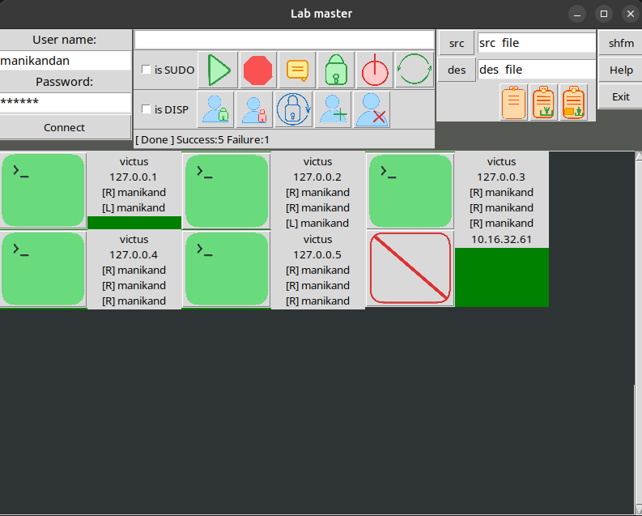
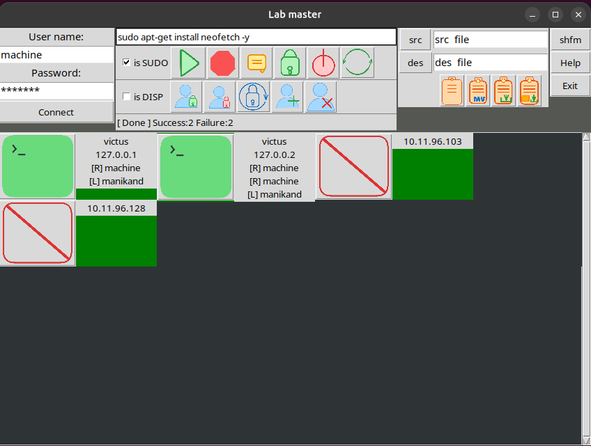

Lab Master is a Python desktop app that orchestrates all Linux machines on your local network over plain SSH — no agents, no daemons, no extra setup on targets.

Every operation is a one-shot SSH command — no persistent connection, no residual process left behind on target machines.
notify-send. Great for lab-wide announcements, maintenance alerts, or exam reminders.The Lab Master toolbar gives you instant access to all operations. Here's what each control does.
Every connected machine gets its own live terminal tile showing its IP and real-time command output — just like in the app.
Lab Master's file transfer panel lets you move files between your machine and any remote target using a simple src/des path pair — no terminal command needed.
finishing N/N shows completed vs total transfersshfm button opens the full SSH file manager for browsing remote filesystemsTarget machines only need sshd running. No agents, no daemons, nothing else to install.
Lab Master running on Linux — showing 4 connected machines with live terminal tiles.

Python 3.9+ desktop app. Runs on any Linux desktop with PyQt5 or GTK available.